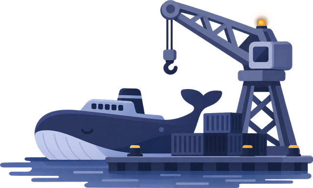

Checking Docker...

Starting
Edit services
Services
Tick what this project needs. Each database can have its own version.
Database login
Your data stays. The new name and password are used when the project starts (Save and apply). The root password does not change.
Redis
Redis restarts when you apply the change. Its data is a cache, so it is lost on restart.
Options
Not opening from another device? Do it by hand
What the switch does: it publishes the project's web port on all network adapters (0.0.0.0) instead of only this computer (127.0.0.1). Check each step below.
- Save and restart. Turn the switch on, press Save, then Restart the project. Without a restart the old setting stays.
-
Check the port. In a terminal run
docker ps --format "{{.Names}} {{.Ports}}". The web container must show0.0.0.0:PORT->80/tcp. If it shows127.0.0.1:PORT, it is still local only: restart again. -
Find this computer's address. Run
ipconfigand use the IPv4 address of your Wi-Fi or Ethernet adapter, for example 192.168.1.105. Ignore addresses of vEthernet, WSL or Docker adapters. -
Allow the port in Windows Firewall. Open
PowerShell as Administrator and run:
New-NetFirewallRule -DisplayName "EnvHub PORT" -Direction Inbound -Protocol TCP -LocalPort PORT -Action Allow -Profile Any -RemoteAddress LocalSubnet(replace PORT). If your Wi-Fi is marked "Public" in Windows, a rule for Private networks only will not work, which is why-Profile Anyis used. - Use the same Wi-Fi. The other device must be on the same Wi-Fi or router. Mobile data, a guest network or a VPN will not reach it.
-
Open it. Type
http://192.168.1.105:PORTin the other device's browser, with your own address and port. The first page can take many seconds while the app warms up.
Addresses like 192.168.x.x never work from the internet. To show the site to someone outside your network, you need a tunnel (for example cloudflared or ngrok) or a server. Use the Test access button on the project's Overview tab to find which step fails.
PHP
Already included: pdo_mysql, mbstring, zip, bcmath, intl.
Tick more extensions (for example GD for images), then click
Save and apply. The PHP image is rebuilt with them, which can
take a few minutes. "Rebuild PHP container" is only needed
when an extension still does not work after that (it builds
everything again from nothing). To check, run
php -m in the php terminal.
The PHP extensions changed, but the PHP image was not rebuilt yet. Click Save and apply, or Rebuild PHP container, to install them.
One setting per line, as name = value. These lines are added to the PHP settings; they do not replace the whole php.ini. Saving and applying restarts the PHP container.
Extra services
Any image from Docker Hub, with ports, environment variables and a start command.
Removing a service deletes its container, but its saved data stays until the project is deleted. Changing a database version keeps its data; a newer major version can need a backup first.
Speed
Docker files
Writes the Docker setup of this project into its own folder, so it can be started without ProjectDockHub, here or on a server. Your own .env is never changed, and a file that is replaced is kept as .bak.
Danger zone
Delete stops and removes the containers of this project.